TAKE NOTE THAT THIS IS NOT A .JAVA FILE BECAUSE IT WILL BE A PLAIN TEXT FILE. INSTEAD, JAVA WILL BE COMPILED VIA THE METHOD SHOWN IN THIS VIDEO.
TL;DW
Skip to steps 3 - 5 if "NppExec" is already installed.
Skip to step 5 to execute the Java file that is already in the desired directory.
Object-Orientation
Java uses Object - Oriented Programming (OOP), a programming style that is intended to make thinking about programming closer to thinking
about the real world.
In OOP, each object is an independent unit with a unique identity, just as objects in the real world are.
Objects also have characteristics, which are used to describe them.
For example, a car can be red or blue, a mug can be full or empty, and so on. These characteristics are also called attributes. An attribute describes the
current state of an object.
In the real world, each object behaves in its own way. The car moves, the phone rings, and so on.
The same applies to objects: behavior is specific to the object's type.
Classes
A class describes what the object will be, but is separate from the object itself.
In other words, classes can be described as blueprints, descriptions, or definitions for an object.
You can use the same class as a blueprint for creating multiple objects. The first step is to define the class, which then becomes a blueprint for object creation.
Each class has a name, and each is used to define attributes and behavior.
Some examples of attributes and behavior:
Methods
Methods define behavior. A
method is a
collection of statements that are grouped together to perform an operation. System.out.println() is an example of a
method.
You can define your own methods to perform your desired tasks.
Let's consider the following code:
The code above declares a method called "sayHello", which prints a text, and then gets called in main.
To call a method, type its name and then follow the name with a set of parentheses. Calling Methods
You can call a method
as many times as necessary.
When a method runs,
the code jumps down to where the
method is defined,
executes the code inside of it, then goes back and proceeds to the next line.
Example:
Method Parameters
You can also create a method
that takes some data, called parameters, along with it when you call it. Write parameters within the
method's parentheses.
For example, we can modify our sayHello()
method to take
and output a String parameter.
The method
above takes a String called name as a parameter, which is used in the
method's body.
Then, when calling the
method, we pass
the parameter's value inside the parentheses.
Methods can take multiple, comma-separated parameters.
Result: (MyClass.java)
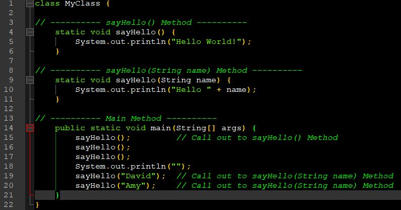 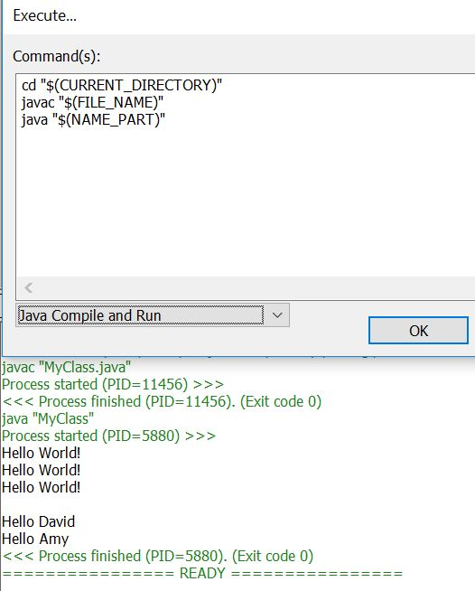 The Return Type
The return keyword can be used in methods to return a value.
For example, we could define a
method
named sum that returns the sum of its two parameters.
Notice that in the method definition , we defined the return type before we defined the method name. For our sum method, it is int, as it takes two parameters of the type int and returns their sum, which is also an int.
The static keyword will be discussed in a future lesson.Now, we can use the method in our main.
class MyClass {As the method returns a value, we can assign it to a variable.
When you do not need to return any value from your method, use the keyword void.Take a look at the same code from our previous lesson with explaining comments, so you can better understand how it works:
// returns an int value 5Having gained knowledge of method return types and parameters, let's take another look at the definition of the main method.
public static void main(String[] args) Let's create a method
that takes two parameters of type int
and returns the greater one, then call it in main:
public static
void main(String[] args) {
int res = max(7, 42);
System.out.println(res); // 42
}
static
int max(int a,
int b) {
if(a > b) {
return a;
}
else {
return b;
}
}
A method can have one type of
parameter (or parameters) and return another, different type. For example, it can take two doubles and
return an int.
Result: (MyClass1.java)
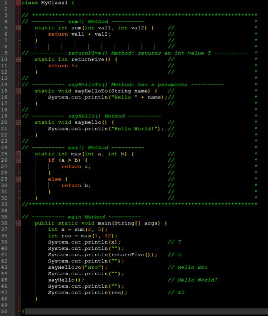 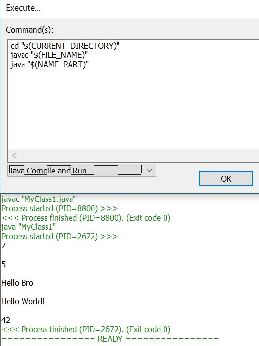 Creating Classes
In order to create your own custom objects, you must first create the corresponding classes. This is accomplished by right clicking on the src folder in Eclipse
and selecting Create → New → Class.
Give your class a name and click Finish to add the new class to your project:
As you can see, Eclipse has already added the initial code for the class.
Now let's create a simple method
in our new class.
Animal.java
We declared a bark() method in our Animal class.
Now, in order to use the class and its methods, we need to declare an object of that class. Creating Objects
Let's head over to our main and create a new object of our class.
MyClass.java
Now, dog is an object of type Animal. Thus, we can call its bark()
method, using
the name of the object and a dot.
The dot notation is used to access the object's attributes and methods.
Result: (MyClass2.java) (Animal.java)
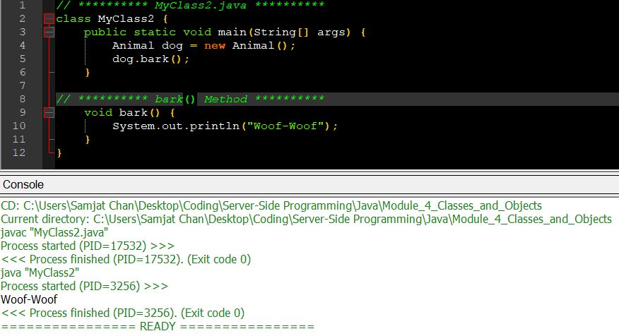 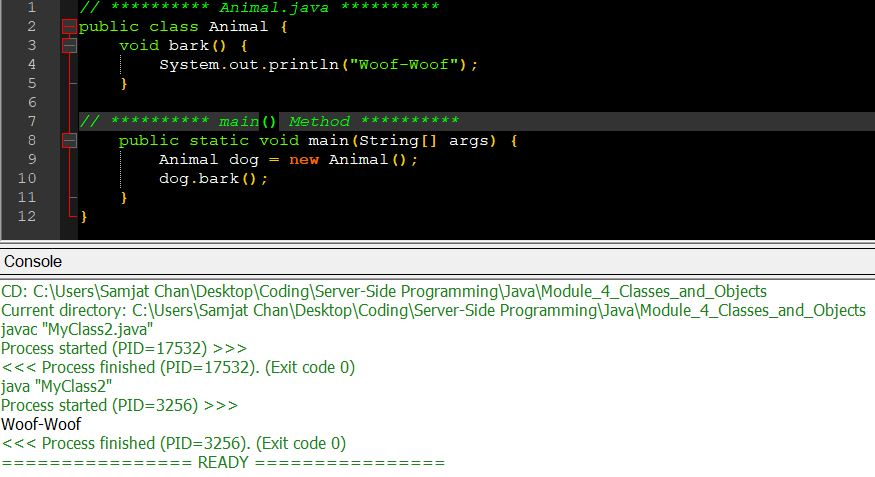 Defining Attributes
A class has attributes and methods. The attributes are basically variables within a class.
Let's create a class called Vehicle, with its corresponding attributes and methods.
maxSpeed, wheels, color, and fuelCapacity are the attributes of our Vehicle class, and horn() is the only method.
You can define as many attributes and methods as necessary. Creating Objects
Next, we can create multiple objects of our Vehicle class, and use the dot syntax to access their attributes and methods.
class MyClass {Result: (Vehicle.java) (MyClass3.java)
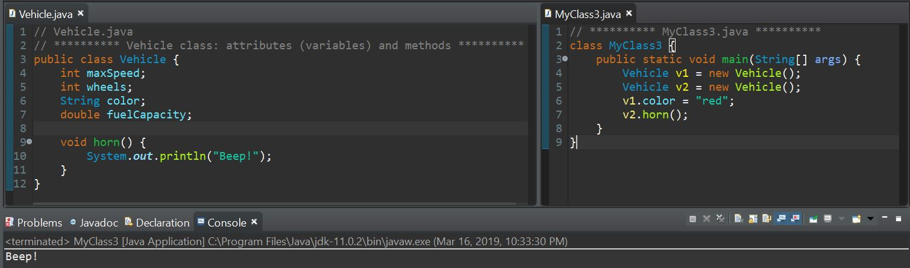 Access Modifiers
Now let's discuss the public keyword in front of the main method.
public static void main(String[] args)public - is an access modifier, meaning that it is used to set the level of access. You can use access modifiers for classes, attributes, and methods.
For classes, the available modifiers are public or default (left blank), as described below:
The following choices are available for attributes and methods:
Getters & Setters
Getters and Setters are used to effectively protect your data, particularly when creating classes.
For each variable, the get
method returns
its value, while the set
method sets the value.
The getter
method returns the value of the attribute.
The setter
method takes a parameter and assigns
it to the attribute.
Once our getter and setter have been defined, we can use it in our main:
public static void main(String[] args) {Getters and setters allow us to have control over the values. You may, for example, validate the given value in the setter before actually setting the value.
Getters and setters are fundamental building blocks for encapsulation, which will be covered in the next module.Result: (Vehicle1.java) (Program.java)
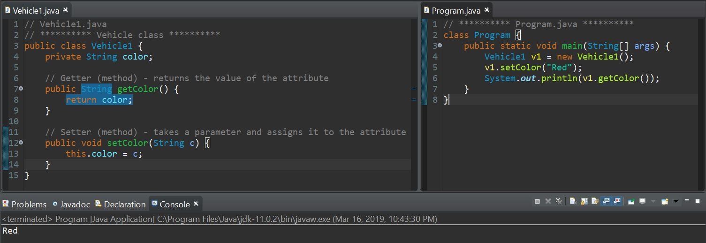 Constructors
Constructors are special methods invoked when an object is created and are used to initialize them.
A constructor can
be used to provide initial values for object attributes.
The Vehicle() method
is the constructor
of our class, so whenever an object of that class is created, the color attribute will be set to "Red".
A constructor
can also take parameters to initialize attributes.
Using Constructors
The constructor
is called when you create an object using the new keyword.
Example:
Constructors
A single class can have multiple constructors with different numbers of parameters.
The setter methods inside the constructors
can be used to set the attribute values.
Example:
The class above has two constructors, one without any parameters setting the color attribute to a default value of "Red", and another
constructor that
accepts a parameter and assigns it to the attribute.
Now, we can use the constructors to create objects of our class.
Result: (Vehicle2.java) (Program1.java)
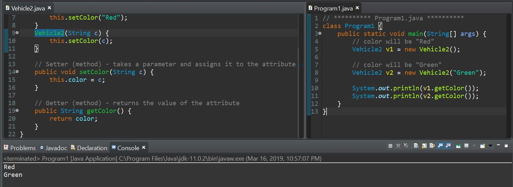 Value Types
Value types are the basic types, and include byte, short, int, long,
float, double,
boolean, and
char.
These data types store the values assigned to them in the corresponding memory locations.
So, when you pass them to a method,
you basically operate on the variable's value, rather than on the variable itself.
Example:
Reference Types
A reference type stores a reference (or address) to the memory location where the corresponding data is stored.
When you create an object using the
constructor, you
create a reference variable.
For example, consider having a Person class defined:
The method
celebrateBirthday takes a Person object as its parameter, and increments its attribute.
Because j is a reference type, the
method affects
the object itself, and is able to change the actual value of its attribute.
Result: (Person.java) (MyClass4.java)

The Math Class
The JDK defines a number of useful classes, one of them being the Math class, which provides predefined methods for mathematical operations.
You do not need to create an object of the Math class to use it. To access it, just type in Math. and the corresponding
method.
Math.ab() returns the absolute value of its parameter.
int a = Math.abs(10); // 10Math.ceil() rounds a floating point value up to the nearest integer value. The rounded value is returned as a double.
double c = Math.ceil(7.342); // 8.0Similarly, Math.floor() rounds a floating point value down to the nearest integer value.
double f = Math.floor(7.343); // 7.0Math.max() returns the largest of its parameters.
int m = Math.max(10, 20); // 20Conversely, Math.min() returns the smallest parameter.
int m = Math.min(10, 20); // 10Math.pow() takes two parameters and returns the first parameter raised to the power of the second parameter.
double p = Math.pow(2, 3); // 8.0Result: (Program2.java)
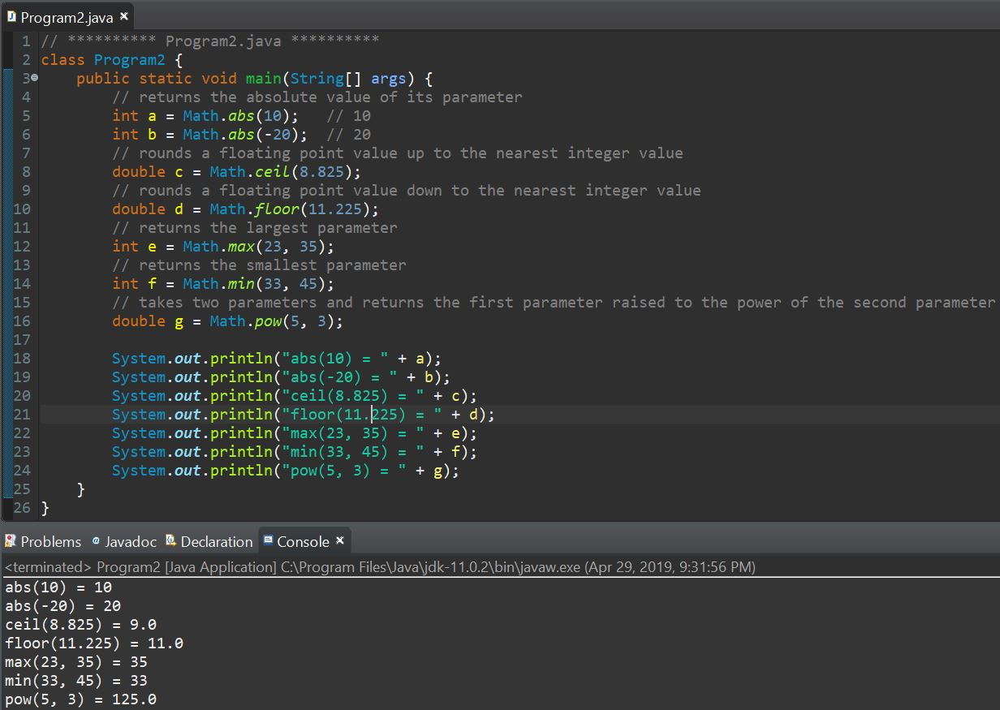 Static
When you declare a variable or a
method as
static, it belongs to the
class, rather than to a specific instance. This means that only one
instance of a
static member exists, even if
you create multiple objects of the class, or if you don't create any. It will be shared by all objects.
Example:
The COUNT variable will be shared by all objects of that class.
Now, we can create objects of our Counter class in main, and access the
static variable.
The output is 2, because the COUNT variable is
static and get incremented by one
each time a new object of the Counter class is created. In the code above, we created 2 objects.
You can also access the static
variable using any object of that class, such as c1.COUNT.
The same concept applies to static methods.
public class Vehicle {Now, the horn method can be called without creating an object:
public class MyClass {Another example of static methods are those of the Math class, which is why you can call them without creating a Math object.
Also, the main method must always be static.Result: (Counter.java) (Vehicle3.java) (MyClass5.java)
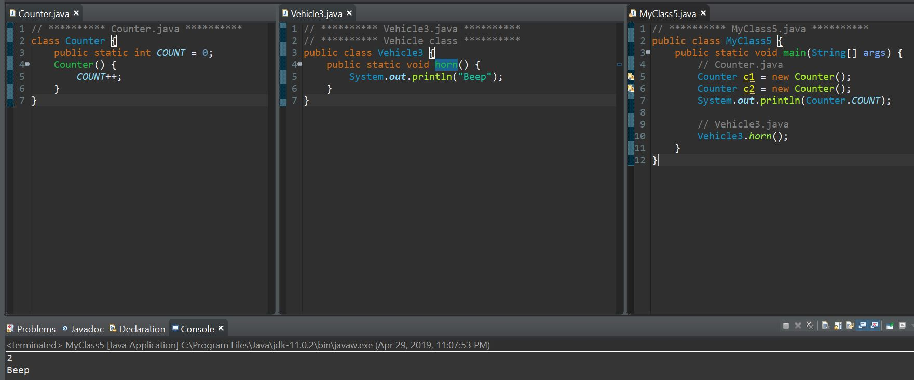 final
Use the final keyword to mark a variable constant, so that it can be assigned only once.
Example:
PI is now a constant. Any attempt to assign it a value will cause an error.
Methods and classes can also be marked final. This serves to restrict methods so that they can't be overridden and classes so that they can't be subclassed. Packages
Packages are used to avoid name conflicts and to control access to classes.
A package can be defined as a group made up of similar types of
classes, along with sub-packages.
Creating a package in Java is quite easy. Simply right click on your
src directory and click New → Package. Give your package
a name and click Finish.
You will notice that the new package appears in the project directory. Now you
can move and create classes inside that package. We have moved our
Vehicle, Counter and Animal classes to the package samples.
When you move/create a class in your package, the following code will appear at the top of the list of files.
package samples; This indicates the package to which the class belongs.
Now, we need to import the classes that are inside a package in our main to be
able to use them.
The following example shows how to use the Vehicle class of the samples package.
Two major results occur when a class is placed in a package. First, the name of the package becomes a part of the name of the class. Second, the name of the package must match the directory structure where the corresponding class file resides.
Use a wildcard to import all classes in a package. Object-Oriented Programming
Class: Human being
Object : Man, Woman
Class : Fruit
Object : Apple, Banana, Mango ...
Class : Mobile Phone
Object : Apple , Samsung , LG ...
Class : Food
Object : Pizza, Rice ....
In Java programming you can create any kind of program that you want.
Android : javaSE, androidJDK, androidNDK,
but if you want create a very securely.
program then you can use Qt (framework for C++).
Desktop app : javaSE,
in this case java has good
framework. but with more RAM in
your pc.(Linux, Windows, Mac)
Advantage of OOPs over Procedure-oriented programming language